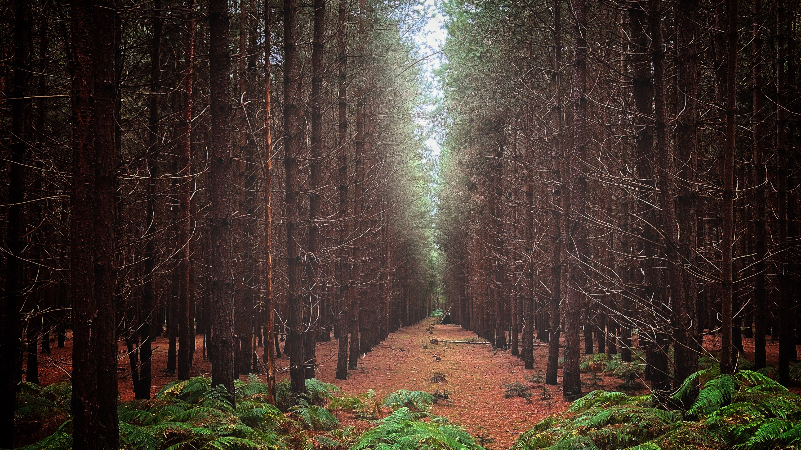

As a big fan of Julian Simpson's “Lovecraft Investigations” podcast series and other related plays for Radio 4, I learned there's nothing like a good old-fashioned British conspiracy theory to add a bit of fun to a holiday. Armed with a vague sense of curiosity (or dread?) we took a day out of this weeks stay in Suffolk to spend it wandering the county's slightly eerier parts. Just a bit of fun, we told ourselves, not expecting to uncover any real mysteries. Spoiler alert: we didn't. But we had a bit of a laugh pretending!
First stop, Dunwich. Not quite R’lyeh but give it a few more centuries and a lot of rain, and it might get there. Once a thriving medieval port town, Dunwich is now known as "The Lost City," due to most of it having been claimed by the sea over the centuries. We stared thoughtfully at the horizon, trying to feel the weight of its drowned history and, having read “Dunwich Suffolk” by Jean & Stuart Bacon, tried to match the historical anecdotes with the present-day ruins. Much to our disappointment, no ancient relics or ghostly apparitions were sighted. Just us, the cliffs, and an overwhelming urge to head to the Ship at Dunwich for a lovely Sunday Lunch before that too might succumb to the ravages of the sea.
Next up was Orford Ness, a shingle spit that is home to a cold war testing site and now a national nature reserve. If you’re looking for a place to ponder the thin line between reality and insanity, this is it. An eerie landscape dotted with derelict military buildings, it was once used for secret military experiments. Basically, it's Suffolk’s answer to Area 51, minus the aliens (probably).
Walking around Orford Ness, I couldn’t help but hear the voice of Julian Simpson’s character Parker in my head, warning of cosmic horrors and government cover-ups. We nodded knowingly at each abandoned building and kept our eyes peeled for anything vaguely alien-looking. Did we see anything out of the ordinary? No. Did we start taking every bird call as a secret code? Also no, but it was close (luckily no owls the day we were there!).
Our final Lovecraft-inspired pilgrimage took us to Rendlesham Forest, the site of Britain’s most famous UFO encounter. Known as "Britain's Roswell," in December 1980 military personnel reported strange lights and mysterious aircraft. We took the UFO Trail, hoping to witness our own encounter. The trail was surprisingly well-marked, complete with informational signs, which felt both reassuring and slightly tourist-trappy.
We spent a good hour squinting at every movement in the sky, trying to determine whether it was a plane, a satellite, or just our imaginations getting carried away. Eventually, we decided that our best chance of seeing something truly out of this world was to head to the nearest independent cafe for a coffee and a scone. No alien encounters, but we did leave with a sense of satisfaction and one tired Westie.
We came, we saw, we wandered around a bit, and we left with the same number of limbs as we started. Suffolk may not have given us real-life Lovecraftian horrors, but it gave us some laughs and more than a few eye rolls from the dog. Special thanks to Julian Simpson for making us think twice about every shadow and to Jean & Stuart Bacon for reminding us that history can be just as compelling as fiction, especially when viewed from the safety of a cozy, converted stable in the grounds of The Old Rectory at Flixton. Next time, we might stick to less supernatural pursuits. Or not. After all, you never know what you might find in the dark corners of the British countryside—or whether it’ll be friendly.
"It's fascinating how a journey through history, myths, and eerie landscapes can spark the imagination, isn't it? From the sunken remnants of Dunwich to the cold war secrets of Orford Ness, and the unexplained phenomena of Rendlesham Forest, there's something uniquely thrilling about exploring the unknown. Whether it's the tantalizing possibility of uncovering cosmic horrors or simply the joy of storytelling, Suffolk's spooky side serves as a reminder that adventure and curiosity are alive in every shadow. So, whether you're a Lovecraft fan or just in it for a good scare, remember: sometimes the best discoveries are the ones you least expect."
Thank you for reading, and remember the truth is out there!
– Stuart Leach